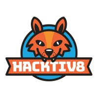
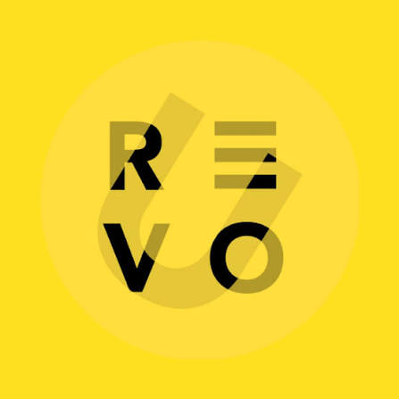
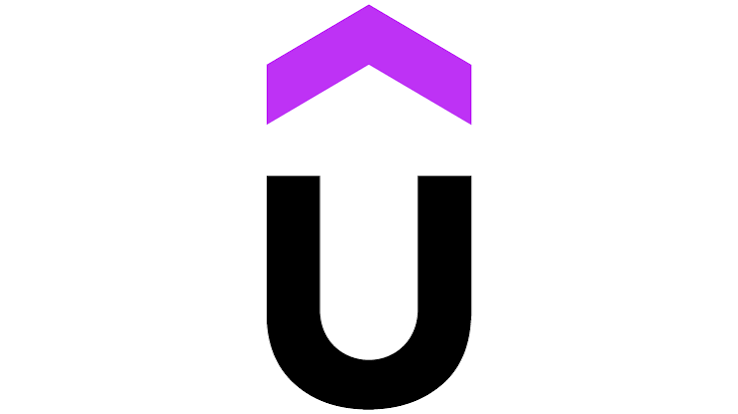

Fresh graduate S1 Sistem Informasi Universitas Bunda Mulia (UBM) dengan IPK 3.48 — siap berkontribusi penuh di lingkungan kerja profesional. Berpengalaman membangun sistem web dan aplikasi mobile dari nol menggunakan Laravel, Vue.js, Next.js, Kotlin, serta Flutter & Firebase.
Terbiasa bekerja dari analisis kebutuhan, perancangan arsitektur, hingga deployment — dengan perhatian penuh pada keamanan sistem, kualitas kode, dan kepuasan pengguna akhir. Siap bergabung dan memberikan dampak nyata sejak hari pertama.
Aldo Gunawan
Latar belakang pendidikan, keahlian teknis, dan karakter kerja — disajikan secara ringkas untuk memudahkan evaluasi Anda.
Saya adalah fresh graduate S1 Sistem Informasi Universitas Bunda Mulia yang antusias di bidang pengembangan aplikasi web dan mobile. Selama kuliah, saya aktif mengerjakan proyek nyata mulai dari sistem informasi manajemen produksi garmen untuk perusahaan, platform e-commerce, hingga aplikasi mobile — menggunakan Laravel, Vue.js, Next.js, MySQL, PostgreSQL, Flutter, dan Kotlin.
Saya terbiasa bekerja terstruktur: memahami kebutuhan pengguna, merancang solusi yang tepat, lalu mengeksekusinya dengan teliti. Saya menjunjung tinggi tanggung jawab, terbuka terhadap masukan, dan selalu berusaha memberikan hasil terbaik dalam setiap pekerjaan. Saat ini saya siap bergabung dalam tim yang dinamis dan ingin terus berkembang bersama.
Membangun aplikasi web dan mobile end-to-end — dari desain database hingga tampilan pengguna — menggunakan Laravel, Next.js, Vue.js, Flutter, dan PostgreSQL/MySQL.
Teliti dalam pengujian fitur, validasi alur sistem, dan pengelolaan basis data — memastikan data selalu akurat dan aplikasi berjalan sesuai ekspektasi.
Nyaman bekerja dalam tim, terbuka terhadap masukan, dan cepat beradaptasi dengan teknologi maupun lingkungan kerja baru.
Dipetakan dengan presisi dan teruji pada lingkungan produksi nyata — dari backend architecture hingga tooling workflow tim profesional.
Pengembangan arsitektur server-side yang andal menggunakan pola MVC, manajemen autentikasi & sesi aman, serta integrasi endpoint data berkecepatan tinggi.
Pembangunan antarmuka interaktif yang dinamis, cepat dibuka, serta nyaman digunakan di seluruh perangkat mobile maupun desktop.
Normalisasi tabel relasional, perancangan foreign keys terstruktur, optimasi query, dan migrasi skema.
Membedah proses bisnis manual industri menjadi diagram alur terstandarisasi dan spesifikasi software yang terukur.
Manajemen source code berbasis Git, pengujian endpoint via Postman, prototyping antarmuka, dan komunikasi tim yang adaptif.
Pengembangan aplikasi mobile berorientasi performa tinggi, efisiensi konsumsi memori, dan antarmuka sentuh yang intuitif. Menguasai arsitektur MVVM di Android Studio dengan Room Database lokal, serta integrasi ekosistem cloud serverless Google Firebase (Cloud Firestore real-time, Auth, dan Push Notifications FCM) pada aplikasi cross-platform Flutter.
Koleksi proyek nyata yang dibangun dari nol, menjawab tantangan efisiensi operasional dan integritas data bisnis.
Studi Kasus: PT Hings Subur Makmur (Manufaktur Tekstil Skala Menengah)
Digitalisasi proses produksi manual berbasis kertas menjadi web application terpusat. Mengintegrasikan pencatatan bahan baku, pelacakan status batch pengerjaan pakaian jadi, hingga laporan rekapitulasi harian bagi jajaran manajemen.
Platform Toko Online Aksesoris
Platform e-commerce independen dengan sinkronisasi inventaris otomatis untuk mencegah overselling barang edisi terbatas. Menggabungkan kecepatan Next.js SSR dengan struktur database relasional PostgreSQL.
• Sinkronisasi ketersediaan stok real-time saat checkout.
• Dashboard pengelola pesanan dan analitik penjualan.
• Rute terproteksi otorisasi pembeli & admin toko.
Sistem web pengelolaan keluar-masuk barang pergudangan dengan validasi multi-gudang, pencatatan log mutasi barang secara presisi, serta filter pencarian instan berbasis Vue.js dan REST API terstruktur.
• Skema relasional ACID menjamin saldo stok tidak pernah minus saat transaksi bersamaan.
• Export data audit dalam format spreadsheet otomatis untuk laporan bulanan.
Aplikasi Karir Native Android • Kotlin & Android Studio
Aplikasi pencari kerja native Android yang dirancang untuk mempertemukan para pencari kerja dengan lowongan karir terverifikasi secara cepat, intuitif, dan hemat memori perangkat. Dilengkapi fitur upload berkas lamaran, bookmark lowongan favorit, dan pelacakan status seleksi secara transparan.
Aplikasi Sirkulasi & Reservasi Buku • Flutter & Google Firebase
Platform reservasi buku perpustakaan digital terintegrasi cloud yang mengeliminasi antrean fisik dan keterlambatan pengembalian buku. Dilengkapi sistem pengecekan stok real-time, tiket peminjaman instan, dan notifikasi pengingat otomatis.
Kronologi riwayat implementasi perangkat lunak dan kredensial pendidikan akademis resmi.
Web Developer (Proyek Skripsi)
Melakukan riset proses manufaktur make-to-order dan membangun solusi aplikasi web manajemen terintegrasi untuk mempercepat pelacakan batch pengerjaan pakaian.
Full-Stack Web Developer
Membangun arsitektur toko online dari tahap desain antarmuka, routing Next.js, skema basis data PostgreSQL, hingga penanganan transaksi inventaris real-time.
Android Developer (Kotlin & Android Studio)
Merancang dan mengimplementasikan aplikasi mobile pencari kerja native Android dari tahap rancangan arsitektur hingga integrasi basis data lokal dan REST API.
Mobile Engineer (Flutter & Firebase)
Membangun platform pemesanan dan peminjaman buku perpustakaan digital cross-platform dengan arsitektur reaktif dan sinkronisasi cloud real-time.
S1 Sistem Informasi (Sarjana Komputer)
Menyelesaikan studi dengan kurikulum berfokus pada rekayasa perangkat lunak perusahaan, pemodelan proses bisnis, dan perancangan arsitektur basis data relasional.
Fondasi etos kerja profesional, kapabilitas analitis sistematis, dan integritas kolaborasi untuk menghadirkan nilai tambah nyata bagi produktivitas tim.
Mampu menganalisis alur proses bisnis dan memecah persoalan teknis kompleks menjadi modul yang logis, terstruktur, serta siap dieksekusi secara efisien.
Cepat menguasai teknologi dan framework baru secara mandiri. Siap beradaptasi dengan kebutuhan tech stack tim tanpa kurva belajar yang panjang.
Terbiasa bekerja dalam tim lintas peran (UI/UX, Backend, QA, dan Stakeholder) — komunikatif, proaktif dalam sprint, dan terbuka terhadap evaluasi kerja.
Mengutamakan akurasi integritas data, validasi fungsional fitur (software testing), dan konsistensi antarmuka pengguna demi meminimalkan bug.
High Ownership: Bertanggung jawab penuh atas penyelesaian tugas dari perancangan hingga implementasi.
Transparansi & Deadline: Disiplin terhadap target dan proaktif mengabarkan pembaruan progres proyek.
Clean Code Standards: Menulis kode modular, terstruktur rapi, dan mudah dirawat tim developer.
Validasi kompetensi teknis, kecerdasan buatan terapan, dan pengembangan web modern dari institusi industri bereputasi.
Sertifikasi internasional dalam pemanfaatan teknologi Generative AI untuk optimalisasi proses bisnis, keamanan etika data AI, dan otomatisasi alur kerja modern.

Pelatihan komprehensif logika pemrograman perangkat lunak, kolaborasi git, dan arsitektur web modern siap industri.

Program eksplorasi rekayasa perangkat lunak, analisis pemodelan data, pemahaman siklus produk digital, dan metodologi kerja tim adaptif.

Penguasaan struktur semantik HTML5, modern grid/flexbox layouts, manipulasi DOM JavaScript, serta standar performa dan aksesibilitas W3C.
Sertifikasi kepemimpinan, etika korporat, manajemen waktu, pemecahan masalah (problem-solving), dan dinamika komunikasi kerja tim lintas fungsional.
Secara konsisten memperbarui wawasan teknis dengan dokumentasi standar resmi, best practices, dan tren ekosistem rekayasa web terkini.
Saya siap berkontribusi langsung pada tim engineering Anda. Terbuka untuk peluang posisi Full-Time Web Developer, Hybrid, maupun Kontrak Proyek di area Tangerang, Jakarta, atau Remote.